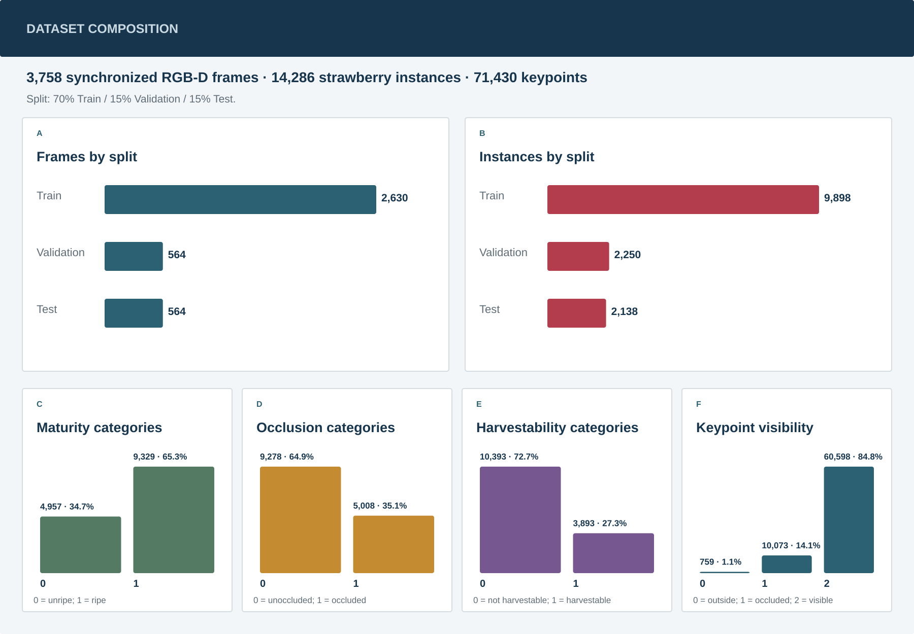

Synchronized RGB-D samples
October 2026
TopoStrawberry: A Large-Scale Harvest-Oriented RGB-D Dataset with Topological Keypoint Refinement and Keypoint-Anchored Harvest-State Recognition
TopoStrawberry-RGBD contains 3,758 paired frames and 14,286 annotated strawberry instances. Each annotated strawberry includes a bounding box, five anatomical keypoints, and maturity, occlusion, and harvestability labels in COCO keypoint format with instance attributes.

01
Dataset statistics
Dataset statistics and composition
A 70% / 15% / 15% train/validation/test split preserves all paired RGB-D frames. The tables below summarize instance density and label balance.
Strawberry bounding boxes
Five keypoints per instance
7,521 files in total; ZIP archive: 5.23 GB
Split and label distributions
| Split | Frames | Share | Instances | Inst./frame |
|---|---|---|---|---|
| Train | 2,630 | 70% | 9,898 | 3.76 |
| Validation | 564 | 15% | 2,250 | 3.99 |
| Test | 564 | 15% | 2,138 | 3.79 |
| Total | 3,758 | 100% | 14,286 | 3.80 |
Label distributions
Counts below cover all splits.
Maturity
0
Immature
4,957 (34.7%)
1
Mature
9,329 (65.3%)
Occlusion
0
Non-occluded
9,278 (64.9%)
1
Occluded
5,008 (35.1%)
Harvestability
0
Not harvestable
10,393 (72.8%)
1
Harvestable
3,893 (27.2%)
Keypoint visibility
0
Outside image
759 (1.1%)
1
Occluded but inferable
10,073 (14.1%)
2
Visible
60,598 (84.8%)

02
Data specification
Dataset organization and annotation format
RGB images and depth maps are organized by split, while train, validation, and test annotations are stored as three COCO-style JSON files under annotations/.
Dataset organization
TopoStrawberry-RGBD/
├── images/
│ ├── train/
│ ├── val/
│ └── test/
├── depth/
│ ├── train/
│ ├── val/
│ └── test/
└── annotations/
├── strawberry_keypoints_train.json
├── strawberry_keypoints_val.json
└── strawberry_keypoints_test.jsonRGB and depth frames share matching filenames within each split.
Depth maps are unsigned 16-bit PNGs (uint16), with values in millimeters (0.001 meters per unit). A value of 0 indicates invalid depth.
Annotation format
strawberry_keypoints_{split}.json
train · val · test
Selected records from the training file: image 0238.png and instance 916. Metadata and category fields are abbreviated; instance values are preserved.
{
"info": {
"version": "1.0"
},
"licenses": [],
"categories": [
{
"id": 1,
"name": "strawberry",
"keypoints": ["Cut", "Top", "Bottom", "Left", "Right"]
}
],
"images": [
{
"id": 238,
"file_name": "0238.png",
"width": 1280,
"height": 720
}
],
"annotations": [
{
"id": 916,
"image_id": 238,
"category_id": 1,
"bbox": [320.07518796992485, 369.02255639097746, 92.48120300751879, 149.62406015037584],
"area": 13837.41308157611,
"iscrowd": 0,
"num_keypoints": 5,
"keypoints": [371.203007518797, 373.5338345864662, 2, 368.94736842105266, 408.8721804511278, 2, 359.9248120300752, 514.8872180451127, 2, 323.08270676691734, 441.203007518797, 2, 408.796992481203, 444.9624060150376, 2],
"segmentation": [],
"maturity": 1,
"occlusion": 0,
"harvestability": 1
}
]
}
image_id
links an annotation to
images.id
;
category_id
links it to
categories.id
.
Instance annotation fields
| Field | Description | Format |
|---|---|---|
bbox |
Bounding box in pixel coordinates | [x, y, width, height] |
keypoints |
Five ordered keypoints: Cut, Top, Bottom, Left, Right | 5 × [x, y, visibility] |
maturity |
Maturity state | binary: 0 = unripe; 1 = ripe |
occlusion |
Instance occlusion state | binary: 0 = unoccluded; 1 = occluded |
harvestability |
Harvest suitability | binary: 0 = not harvestable; 1 = harvestable |
Keypoint visibility: 0 = outside the image; 1 = occluded but inferable; 2 = visible.
COCO-compatible fields:
id, image_id, category_id, bbox, area, iscrowd, segmentation, keypoints, num_keypoints
Dataset-specific fields:
maturity, occlusion, harvestability
03
Baseline evaluation
Keypoint benchmark results
Keypoint detection results on the TopoStrawberry-RGBD test set. Methods are grouped by publication year and model family; bold values indicate the best result for each metric.
| Method | Year | AP ↑ | AP50 ↑ | AP75 ↑ | AR ↑ | GFLOPs ↓ | FPS ↑ |
|---|---|---|---|---|---|---|---|
| CenterNet-DLA34 | 2019 | 64.70 | 94.26 | 73.77 | 72.45 | 40.54 | 87.56 |
| CenterNet-Hourglass104 | 2019 | 67.89 | 95.35 | 78.01 | 75.30 | 350.49 | 43.75 |
| CID-HRNet-W32 | 2022 | 73.56 | 96.72 | 85.00 | 79.81 | 78.77 | 34.79 |
| CID-HRNet-W48 | 2022 | 73.46 | 97.56 | 84.47 | 79.74 | 161.50 | 35.65 |
| PETR-R50 | 2022 | 66.50 | 88.32 | 77.35 | 78.10 | 218.02 | 12.49 |
| PETR-R101 | 2022 | 67.48 | 89.17 | 77.45 | 79.11 | 293.07 | 11.66 |
| YOLOX-Pose-S | 2022 | 72.17 | 96.41 | 82.34 | 78.30 | 18.47 | 92.63 |
| YOLOX-Pose-M | 2022 | 72.00 | 96.40 | 81.57 | 78.22 | 48.26 | 84.87 |
| YOLOX-Pose-L | 2022 | 72.57 | 97.35 | 82.73 | 78.92 | 98.03 | 70.07 |
| ED-Pose-R50 | 2023 | 74.21 | 97.55 | 85.63 | 81.60 | 273.72 | 17.31 |
| ED-Pose-R101 | 2023 | 73.49 | 97.51 | 84.65 | 80.68 | 348.77 | 15.84 |
| RTMO-S | 2024 | 71.28 | 96.39 | 80.67 | 77.08 | 12.31 | 83.68 |
| RTMO-M | 2024 | 69.39 | 96.32 | 78.76 | 75.83 | 31.96 | 74.63 |
| RTMO-L | 2024 | 71.67 | 96.28 | 80.65 | 78.00 | 67.99 | 64.61 |
| DETRPose-S | 2025 | 70.20 | 96.69 | 81.14 | 77.96 | 13.26 | 63.05 |
| DETRPose-M | 2025 | 65.13 | 93.74 | 74.50 | 74.84 | 29.86 | 46.19 |
| DETRPose-L | 2025 | 73.45 | 96.47 | 84.91 | 80.54 | 47.75 | 39.59 |
| TopoStrawberry-Net (Ours) | 2026 | 75.01 | 97.48 | 85.54 | 80.43 | 99.21 | 61.73 |
Metric definition. AP is COCO keypoint AP averaged over OKS 0.50:0.95; AP, AP50, AP75, and AR are reported as percentages. GFLOPs counts one fused multiply-add (FMA) as one operation; FPS denotes frames per second.
04
Qualitative inspection
Annotation and depth visualizations
Both views below use the same representative sample. The first shows bounding boxes, five anatomical keypoints, maturity, and occlusion labels; the second uses the labels and subject depth to retain strawberries, foliage, and nearby background in a colorized 3D point cloud.
Loading real point-cloud data…

Drag to rotate
Shift/right-drag to pan
Wheel or pinch to zoom
Arrow keys · +/− · R
05
Dataset access
Downloads and resources
Controlled access
TopoStrawberry-RGBD dataset package
Access to the dataset is available for approved non-commercial research purposes. To request access, please download and complete the application form, then submit it to the email address provided in the form. Applications will be reviewed individually.
Download Application Form- Dataset
- Controlled access
- Dataset license
- CC BY-NC 4.0